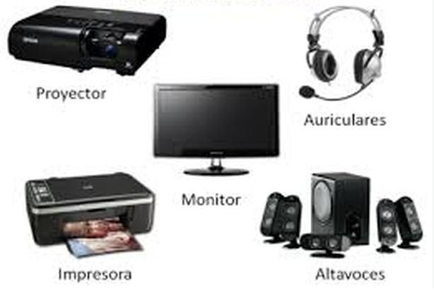
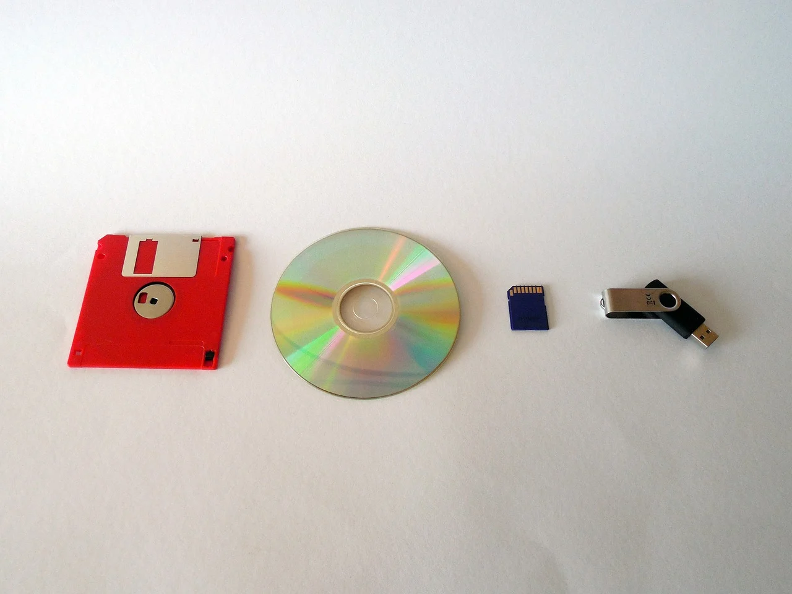
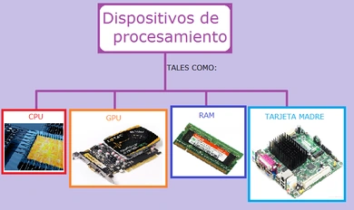
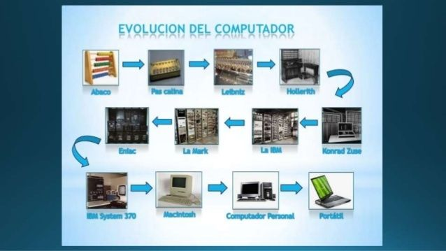
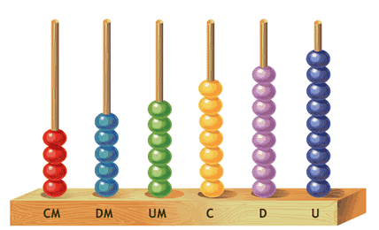

Sobre mí
Hola a todos, soy Esteban Florez Zuluaga, un apasionado desarrollador de software BackEnd con más de 2 años de experiencia en la industria. Me especializo en el desarrollo de aplicaciones robustas y escalables utilizando tecnologías como Asp .NET Core, Python y Angular. Además, tengo un fuerte interés en la seguridad informática y la optimización del rendimiento.
En mi tiempo libre, disfruto explorando nuevas tecnologías, participando en hackathons y contribuyendo a proyectos de código abierto. También soy un ávido lector de libros de ciencia ficción y un entusiasta del ciclismo de montaña.
Este blog es mi espacio personal donde comparto mis pensamientos y conocimientos sobre tecnología, en particular, temas relacionados con hardware y software. Mi objetivo es ayudar a otros desarrolladores a mejorar sus habilidades y mantenerse actualizados con las últimas tendencias en la industria.
Blog
¿Qué es el Hardware?
El hardware se refiere a todos los componentes físicos que conforman un sistema informático. Esto incluye dispositivos como el monitor, teclado, disco duro, y la unidad central de procesamiento (CPU), entre otros. A diferencia del software, el hardware es tangible y esencial para que cualquier sistema funcione correctamente.

El hardware puede clasificarse en varias categorías, incluyendo hardware de entrada, hardware de salida, hardware de almacenamiento y hardware de procesamiento. Cada uno de estos componentes juega un papel crucial en el funcionamiento general del sistema. Sin hardware, el software no podría ejecutarse, ya que el hardware proporciona la infraestructura física necesaria.
Es importante entender que el hardware ha evolucionado a lo largo del tiempo, mejorando en términos de velocidad, eficiencia energética, y capacidad. Estos avances han permitido que las computadoras modernas realicen tareas cada vez más complejas.
Tipos de Hardware
Existen varios tipos de hardware que se pueden clasificar en función de su función dentro del sistema. Los más comunes son:
- Hardware de entrada: Dispositivos como el teclado y el ratón que permiten al usuario interactuar con el sistema.

- Hardware de salida: Dispositivos como la pantalla y la impresora que muestran o producen resultados del procesamiento del sistema.

- Hardware de almacenamiento: Dispositivos como los discos duros y SSDs que almacenan datos y programas.

- Hardware de procesamiento: Componentes como la CPU y la GPU que realizan cálculos y ejecutan programas.

Además, existen otros tipos de hardware especializados, como las tarjetas de red, que permiten la comunicación entre dispositivos, y las fuentes de alimentación, que proporcionan energía a todos los componentes del sistema.
El conocimiento sobre los diferentes tipos de hardware es esencial para cualquier persona que desee entender el funcionamiento interno de un computador o desarrollar habilidades en el ensamblaje y mantenimiento de equipos.
Importancia del Hardware
El hardware es crucial para el funcionamiento de cualquier dispositivo informático. Sin hardware, el software no tendría una plataforma para ejecutarse, lo que significa que no podríamos utilizar computadoras, teléfonos móviles, o cualquier otro dispositivo electrónico. Además, la calidad y capacidad del hardware determinan en gran medida el rendimiento y la eficiencia del sistema en su conjunto.

La evolución del hardware ha permitido avances significativos en la tecnología, desde la creación de computadoras más rápidas y eficientes hasta el desarrollo de dispositivos móviles potentes y compactos. La innovación en hardware continúa impulsando el progreso en diversas áreas, incluyendo la inteligencia artificial, la realidad virtual y la computación en la nube.
El Ábaco: El Primer Computador de la Historia
El ábaco es uno de los dispositivos de cálculo más antiguos conocidos por la humanidad, y aunque hoy en día puede parecer rudimentario en comparación con los computadores modernos, su invención marcó un hito fundamental en la historia de las matemáticas y la computación.

El origen del ábaco se remonta a más de 4,000 años atrás, con los primeros registros provenientes de la antigua Mesopotamia. Este dispositivo ha sido utilizado en diversas culturas a lo largo de la historia, incluyendo las civilizaciones china, egipcia, griega y romana.
Aunque el ábaco no es un computador en el sentido moderno, su influencia en la evolución de la computación es innegable. Sentó las bases para la comprensión de la aritmética, la representación de datos y la creación de algoritmos, todos ellos componentes fundamentales de las ciencias computacionales. En resumen, el ábaco no solo fue una herramienta crucial para el desarrollo de la matemática y el cálculo, sino que también es un precursor conceptual de las computadoras que utilizamos hoy en día.